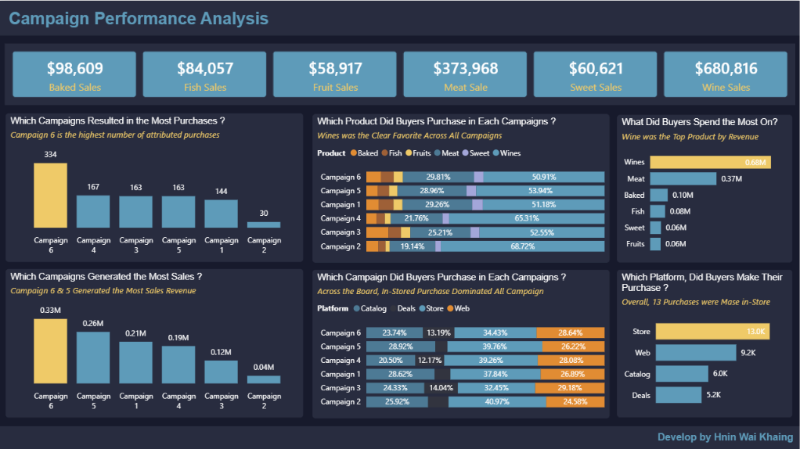
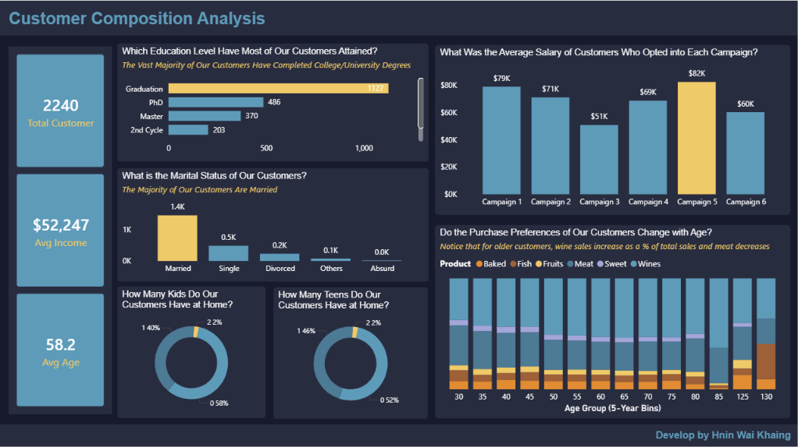
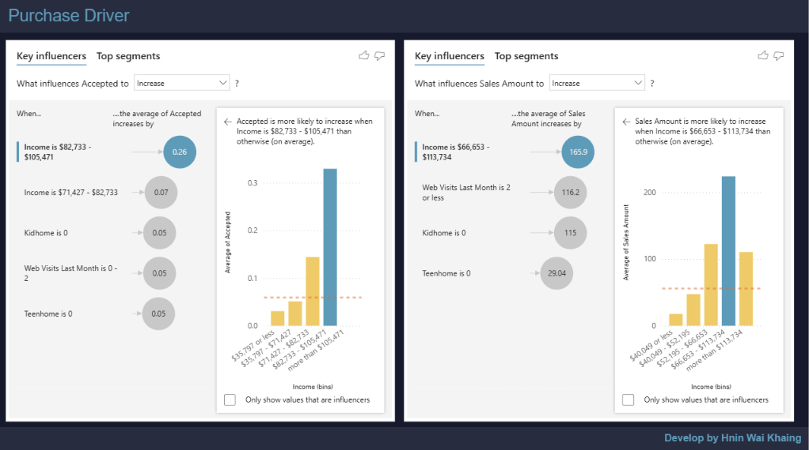
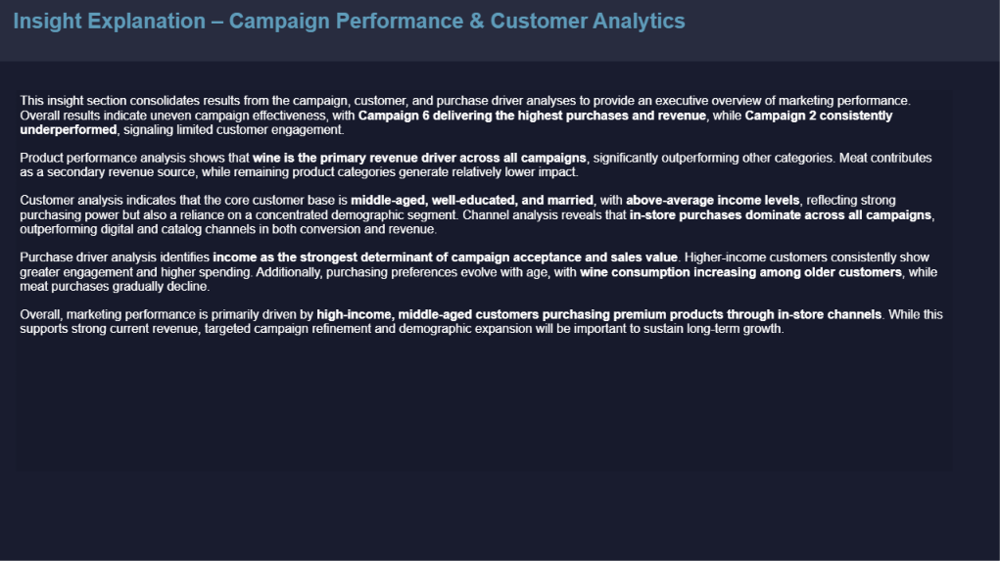
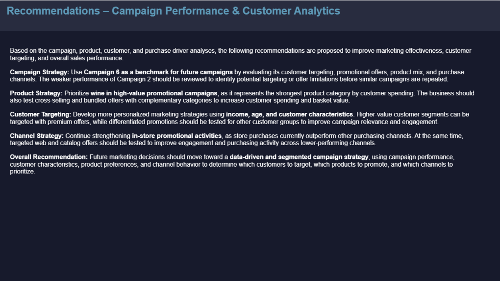

Project Overview
This project develops a Marketing Analytics and Business Intelligence solution for a retail food and beverage business. The dashboard brings together campaign response, product spending, customer characteristics, and purchase-channel activity to provide a consolidated view of marketing performance.
The project is structured around business questions to help decision-makers understand which campaigns perform best, which products attract the most customer spending, who the core customers are, and which customer characteristics are associated with campaign response and purchasing behavior.
Business Problem
The business had customer and marketing data but lacked a consolidated analytical view for evaluating campaign effectiveness and understanding customer purchasing behavior. The project transforms raw marketing data into a Power BI decision-support solution for more targeted and evidence-based marketing decisions.
Project Objectives
- Evaluate the six analyzed marketing campaigns.
- Identify high-performing and underperforming campaigns.
- Analyze customer spending across product categories.
- Understand customer demographic and socioeconomic characteristics.
- Compare purchasing behavior across store, web, catalog, and deal channels.
- Explore characteristics associated with campaign acceptance and spending.
Business Questions
- How are the six analyzed marketing campaigns performing?
- How are product categories performing?
- Who are our customers?
- What factors are associated with campaign performance and buyer decisions?
Analytical Approach
Dashboard





Key Insights
- Campaign 6 produced the strongest campaign response/purchase performance, while Campaign 2 showed considerably weaker performance, indicating meaningful variation in effectiveness across campaigns.
- Wine represents the dominant product category by customer spending, substantially outperforming other categories, while Meat represents another important spending category.
- The customer base is primarily composed of middle-aged, relatively well-educated, and married customers, providing a clearer profile for marketing segmentation.
- In-store purchasing represents the strongest purchasing channel, outperforming web and catalog purchasing activity.
- Income emerged as an important observed factor associated with both campaign acceptance and customer spending. Higher-income segments generally demonstrated stronger purchasing behavior in the analysis.
- Product purchasing patterns vary across age groups, suggesting that a single product promotion strategy may not be equally effective across the entire customer base.
Business Recommendations
Optimize Campaign Strategy: Use Campaign 6 as a benchmark for future campaigns by evaluating its customer targeting, promotional offers, product mix, and channel characteristics. Investigate the weaker performance of Campaign 2 before repeating similar campaign approaches.
Strengthen Product Strategy: Prioritize Wine in high-value promotional campaigns and test cross-selling or bundled offers with complementary product categories to increase customer spending.
Personalize Customer Targeting: Use income, age, and customer characteristics to develop differentiated marketing strategies. Premium offers can be tested with higher-value segments while alternative propositions are developed for other customer groups.
Improve Channel Performance: Maintain strong in-store promotional activity while testing targeted web and catalog strategies to improve customer engagement and purchasing activity across lower-performing channels.
Adopt Continuous Campaign Measurement: Use campaign response, customer spending, product preferences, and channel behavior as a consistent measurement framework for evaluating future campaigns and determining whether successful strategies should be scaled.
Project Outcome
The project transformed raw marketing and customer data into an interactive Power BI marketing analytics solution that provides management with a consolidated view of campaign effectiveness, customer composition, product spending, purchase channels, and behavioral drivers.
The dashboard demonstrates how marketing data can be used not only to describe historical performance but also to support decisions regarding campaign optimization, customer segmentation, product promotion, and channel strategy.
The project establishes a clear analytical flow: Business Problem -> Business Questions -> Data Analysis -> Dashboard -> Insights -> Business Recommendations. This provides a structured foundation for more data-driven marketing decision-making.